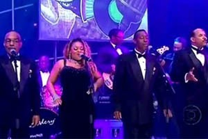

|
|
The Platters relembra sucessos em show no Theatro Pedro IIGrupo ficou eternizado com "Only You" e canções da década de 1950O grupo The Platters, famoso pelo rock and roll da década de 50, se apresentou às 20h de domingo (20) no Theatro Pedro II, em Ribeirão Preto. Com mais de 50 anos de carreira, o conjunto imortalizou as canções "Only You", "Smoke Gets In Your Eyes" e "You’ll Never Know".  |
|
Geek Theory© 2012